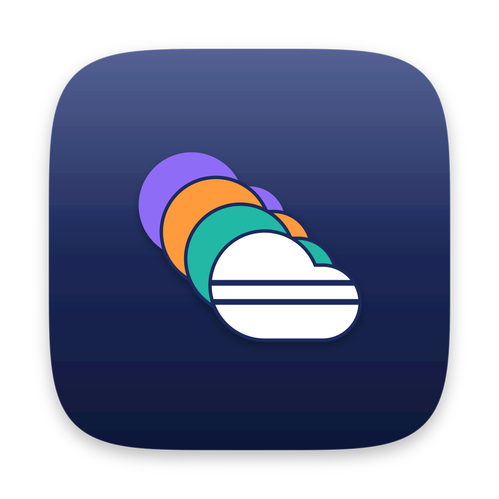
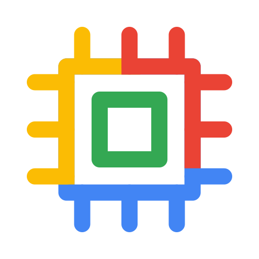
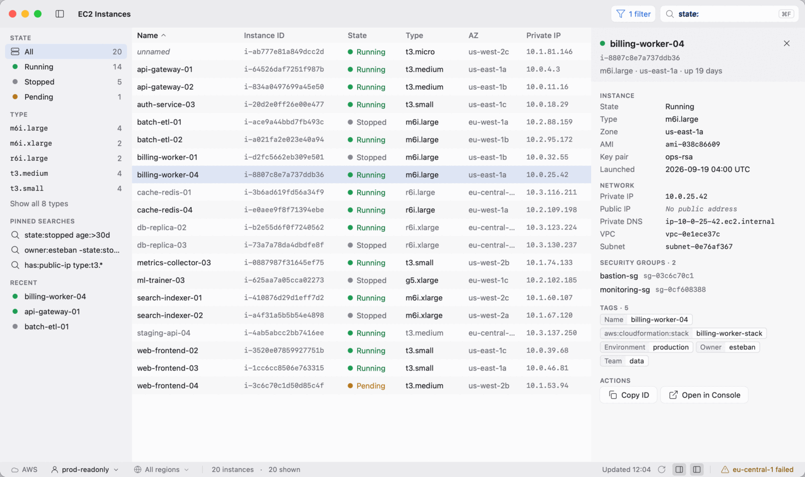
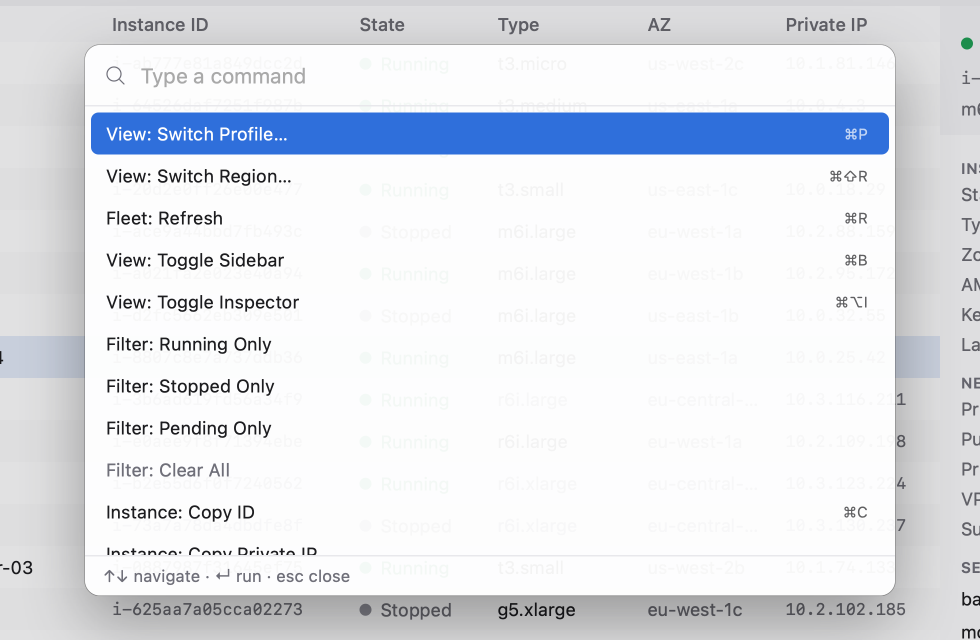

One table for every cloud
Choose All providers and every instance from every connected account and project lands in one list, with name, state, type, location and owner side by side. Each row shows which cloud it came from.

CloudDeck
Multicloud, in one appCloudDeck is building toward every service on every cloud. Today: AWS and Google Cloud — more services and clouds on the way. A native app for macOS and Linux that signs in the way you already do.
Download for macOS Linux and Homebrew
No account handy? clouddeck --demo opens a fake fleet.
Illustration with sample data.
The AWS console shows one account and one region at a time. The Google Cloud console shows one project. CloudDeck shows all of them at once, in the same columns.
Choose All providers and every instance from every connected account and project lands in one list, with name, state, type, location and owner side by side. Each row shows which cloud it came from.
The same query works everywhere. Narrow to a cloud with provider:gcp, then keep going: provider:aws state:running type:t3.*. Counts per provider update as you type.
Search
Type words to match any field, or filter by field: state:running, type:t3.*, -state:stopped, tag:Team=payments. Autocomplete suggests values with live counts, and results update as you type.

Keyboard
Press ⌘⇧P (Ctrl+Shift+P on Linux) and type what you want: switch profile or region, refresh, show only running instances, copy an instance's ID or IP, open it in its cloud console, retry a failed region.
Each command shows its shortcut, so the palette teaches you the keys as you go.

brew install --cask eginez/clouddeck/clouddeckOr get the disk image from Releases. The app is not notarized yet: the first time, right-click CloudDeck and choose Open. The cask does this for you.
brew install eginez/clouddeck/clouddeckOr download the tarball from Releases, extract it and run ./clouddeck.
~/.aws/config and ec2:DescribeInstances.gcloud auth application-default login once.clouddeck --demo.More clouds and services coming.